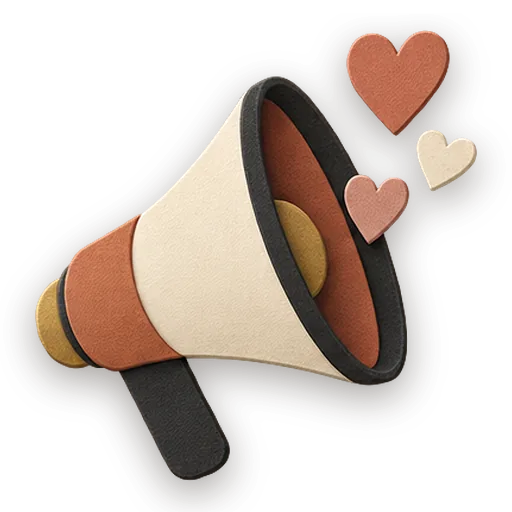

Email / Inbox
Sync an email account into a project as canonical markdown, then triage, draft, and summarize correspondence with a gezel.
Runs in the Gezel app
Email / Inbox uses Gezel’s own conversation and project views rather than a page of its own, so there is no browser preview. Install Gezel to try it.
What’s inside
Start one
- Download Gezel for Mac, Windows or Linux. It’s free.
- Choose New project, then Communication, then Email / Inbox.
- Your crew takes it from there, on the model you choose.
More apps to try
-

Communication Social Feed Run a social feed like a small newsroom — a social media writer keeps every post moving through a real pipeline (idea to published, nothing by accident), a copywriter sharpens each variant for its platform, and a live board shows exactly where every post stands. Try it hereCrew: Social Media Writer + 13 craftbooks -
 Home & Family
Caregiving Binder
Coordinate a loved one's care without losing the thread.
Try it hereCrew: Care Coordinator1 craftbook
Home & Family
Caregiving Binder
Coordinate a loved one's care without losing the thread.
Try it hereCrew: Care Coordinator1 craftbook
-
 Home & Family
Household Manual
The living manual for your home.
Try it hereCrew: Home Keeper1 craftbook
Home & Family
Household Manual
The living manual for your home.
Try it hereCrew: Home Keeper1 craftbook